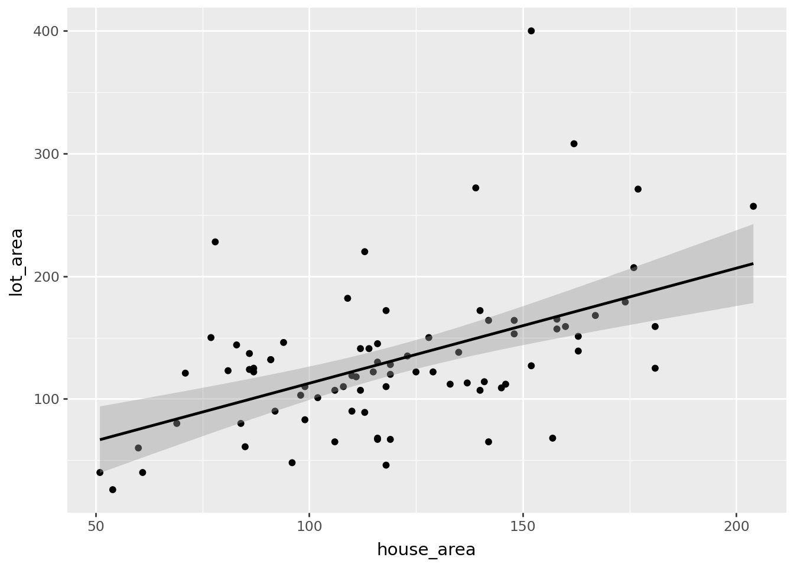
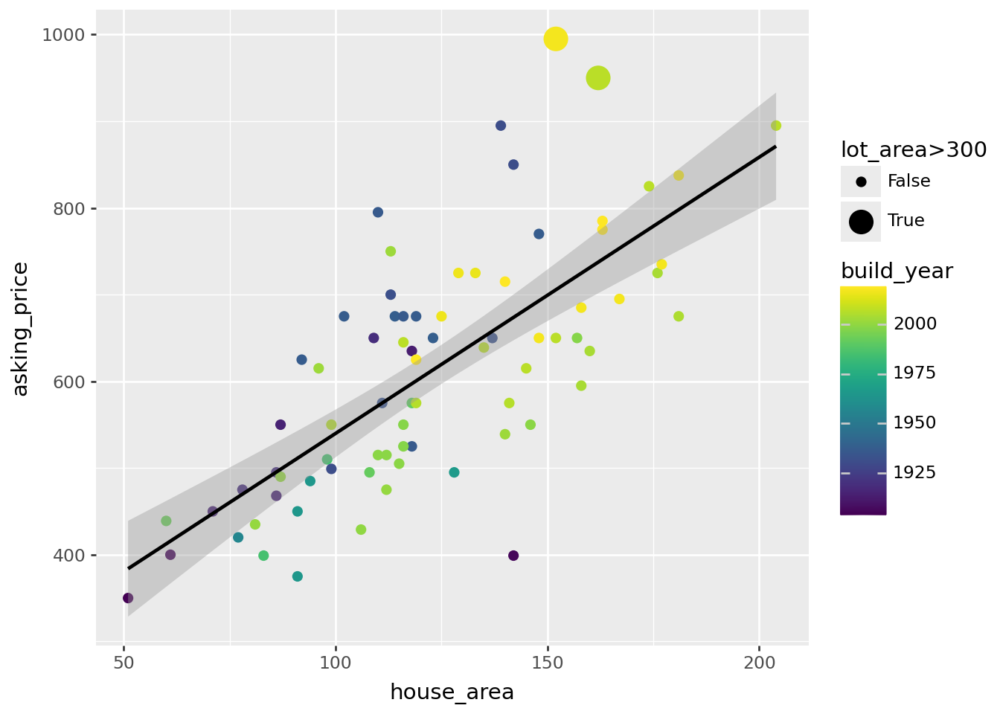
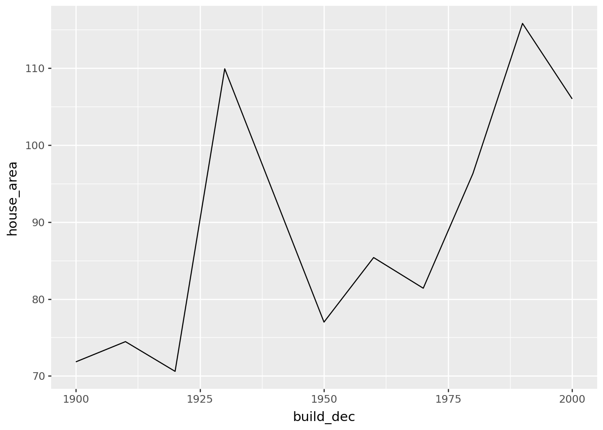
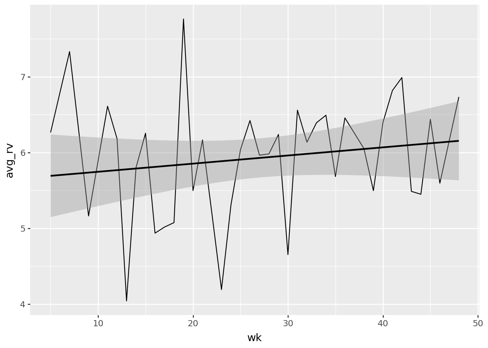
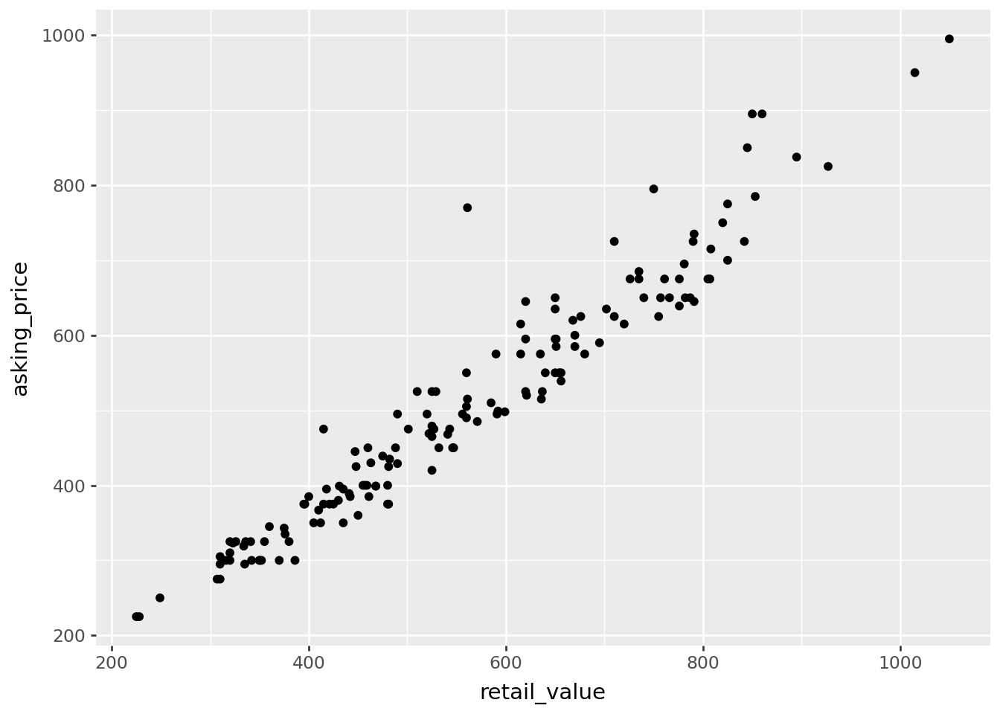
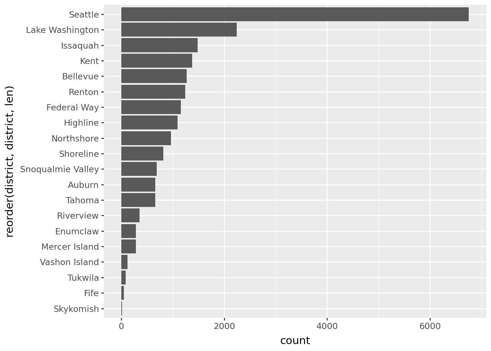
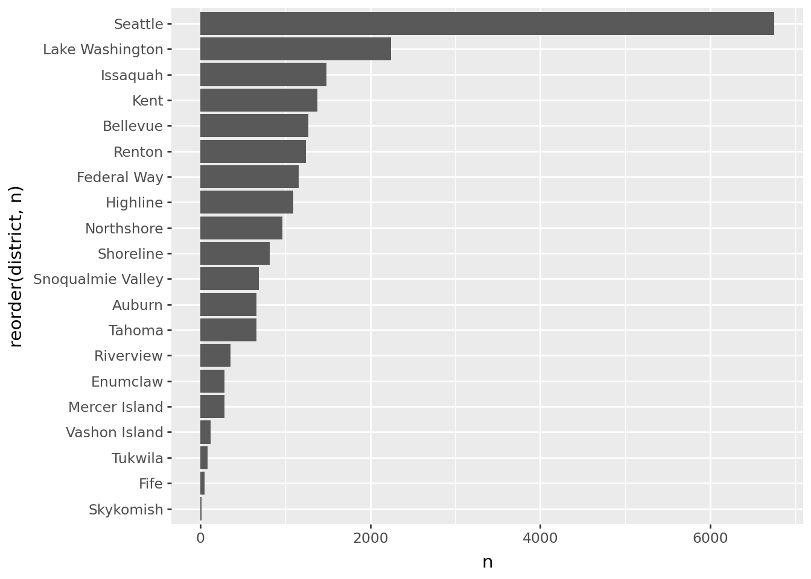
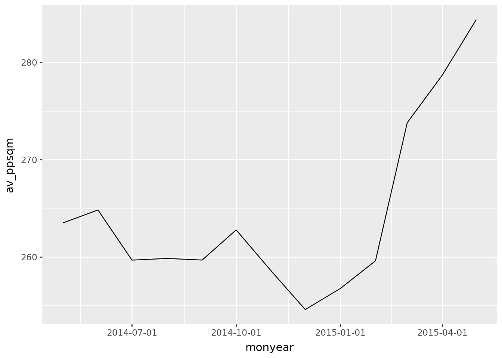
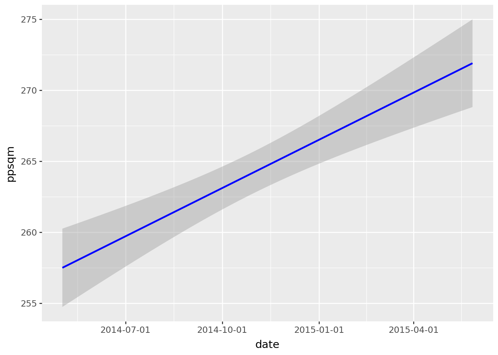
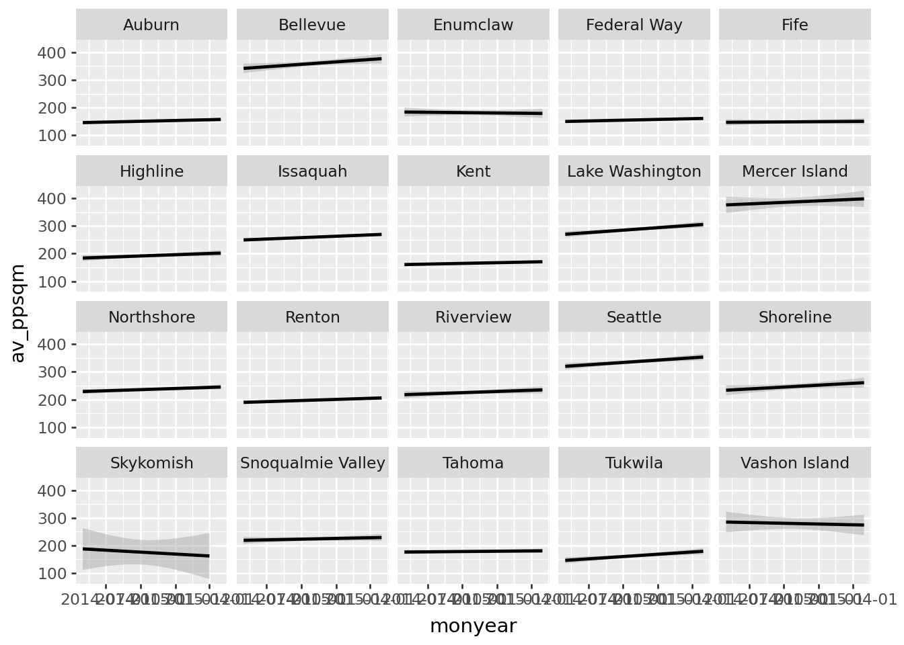

import polars as pl
import polars.selectors as cs
from plotnine import *Practical 2: Data Visualization + Wrangling
This document contain a solved version of the second practical on Data Visualization + Wrangling
The objective of the tutorial is to give students a chance to practice the data visualization and data wrangling, applying the skills learned through the video lessons on a new dataset.
Remember that there is typically no right or wrong solution, eg. your solution can be correct even if it differs from ours! The solution presents how to obtain the tables and graph that gives you the numbers asked for, but it is left as an exercise to you to read out the numbers that answer the actual questions.
Preparation
Note
Before you begin your peer-programming session, please, start the new Jupyter notebook environment in your terminal using the command you learned in Module 1 of the course.
uv run jupyter labCreate a new notebook and add a text cell atop your document for this practical session. Add a header # Data Visualization and wrangling. Then add a code cell and place the following code there.
Then import the datasets for this practical. Add another code cell below (using the key ‘B’) and paste the following code. This will import two datasets we will be using in the session: Utrecht and King’s County.
ut = pl.read_csv("https://bit.ly/data24utrecht", try_parse_dates=True)
kc = pl.read_csv('https://bit.ly/data24kingscounty', try_parse_dates=True)Utrecht
Answer the following challenges using Utrecht dataset.
Challenge 1
Challenge
What is the average garden size for the houses in the Utrecht dataset? What is the median distance from the train station?
(
ut.describe()
)
shape: (9, 24)
| statistic | id | zip_code4 | zip_code6 | zip_code6_id | house_type | lot_area | house_area | garden_size | rooms | bathrooms | x_coor | y_coor | build_year | retail_value | asking_price | energy_label | energy_eff | valuation_date | street | subdistrict | district | city | dist_from_train |
|---|---|---|---|---|---|---|---|---|---|---|---|---|---|---|---|---|---|---|---|---|---|---|---|
| str | f64 | f64 | str | str | str | f64 | f64 | f64 | f64 | f64 | f64 | f64 | f64 | f64 | f64 | str | f64 | str | str | str | str | str | f64 |
| "count" | 153.0 | 153.0 | "153" | "153" | "153" | 153.0 | 153.0 | 141.0 | 153.0 | 153.0 | 153.0 | 153.0 | 153.0 | 153.0 | 153.0 | "150" | 150.0 | "153" | "153" | "153" | "153" | "153" | 153.0 |
| "null_count" | 0.0 | 0.0 | "0" | "0" | "0" | 0.0 | 0.0 | 12.0 | 0.0 | 0.0 | 0.0 | 0.0 | 0.0 | 0.0 | 0.0 | "3" | 3.0 | "0" | "0" | "0" | "0" | "0" | 0.0 |
| "mean" | 5077.104575 | 3524.026144 | null | null | null | 69.503268 | 98.830065 | 29.87234 | 4.03268 | 1.091503 | 52.088116 | 5.088639 | 1967.980392 | 559.300654 | 506.140523 | null | 0.5 | "2024-07-13 06:16:28.235294" | null | null | null | null | 3.045817 |
| "std" | 45.075107 | 38.256225 | null | null | null | 79.20818 | 35.672448 | 33.3903 | 1.519255 | 0.28927 | 0.016607 | 0.039587 | 67.868824 | 173.819215 | 162.0794 | null | 0.501675 | null | null | null | null | null | 1.879933 |
| "min" | 5000.0 | 3438.0 | "3438LE" | "3438LE100" | "appartement" | 0.0 | 28.0 | 0.0 | 1.0 | 1.0 | 52.0465 | 5.0 | 1320.0 | 225.0 | 225.0 | "A" | 0.0 | "2024-01-31" | "A v Dalsumlaan" | "Binnenstad city" | "Binnenstad" | "De Meern" | 0.68 |
| "25%" | 5038.0 | 3521.0 | null | null | null | 0.0 | 76.0 | 0.0 | 3.0 | 1.0 | 52.0773 | 5.068 | 1932.0 | 425.0 | 375.0 | null | 0.0 | "2024-05-15" | null | null | null | null | 1.63 |
| "50%" | 5077.0 | 3527.0 | null | null | null | 48.0 | 93.0 | 21.0 | 4.0 | 1.0 | 52.0919 | 5.0989 | 1985.0 | 541.0 | 490.0 | null | 1.0 | "2024-07-10" | null | null | null | null | 2.68 |
| "75%" | 5116.0 | 3544.0 | null | null | null | 125.0 | 118.0 | 50.0 | 5.0 | 1.0 | 52.0986 | 5.1123 | 2007.0 | 676.0 | 625.0 | null | 1.0 | "2024-09-16" | null | null | null | null | 4.32 |
| "max" | 5154.0 | 3584.0 | "3584HD" | "3584HD019" | "woonhuis" | 400.0 | 204.0 | 162.0 | 8.0 | 2.0 | 52.1131 | 5.1505 | 2019.0 | 1050.0 | 995.0 | "G" | 1.0 | "2024-11-27" | "van der Broekstraat" | "Zuilen-west" | "Zuid-West" | "Vleuten" | 7.57 |
Challenge 2
Challenge
Plot house area against lot area for the woonhuis properties and add a linear trend line. Which points stand out as outliers from the overall pattern? Roughly what lot area would you expect for a 200 sqm house based on this line?
💡 You can pass the data to
💡 You can pass the data to
plotnine using the .pipe() method.(
ut
.filter(pl.col('house_type')=='woonhuis')
.pipe(ggplot, aes(x='house_area', y='lot_area')) +
geom_point()+
geom_smooth(method='lm')
)
Challenge 3
Challenge
Do the outliers you identified in the previous plot also stand out in the relationship between house area and asking price? Do these outliers correspond to newer or older houses? Are they located close to one another? What are their 4-digit zip codes?
(
ut
.filter(pl.col('house_type')=='woonhuis')
.filter(pl.col('build_year')>1900)
.pipe(ggplot, aes(x='house_area', y='asking_price'))+
geom_point(aes(size='lot_area>300', color='build_year'))+
geom_smooth(method='lm')
)
(
ut
.filter(pl.col('house_type')=='woonhuis')
.filter(pl.col('build_year')>1900)
.pipe(ggplot, aes(x='x_coor', y='y_coor'))+
geom_jitter(aes(color='lot_area>300'))
)
(
ut
.filter(pl.col('house_type')=='woonhuis')
.filter(pl.col('lot_area')>300)
.select(pl.col('zip_code4'))
)C:\Users\DmytroPerepolkin\Projects\LUDataLiteracy\.venv\Lib\site-packages\plotnine\scales\scale_size.py:46: PlotnineWarning: Using size for a discrete variable is not advised.

shape: (2, 1)
| zip_code4 |
|---|
| i64 |
| 3543 |
| 3543 |
Challenge 4
Challenge
Create a small dataset that includes only houses from the zip codes identified in the previous challenge. Show the street name, house size, lot area, build year, energy class, and asking price. How many houses are in your dataset? Arrange the observations by the year the houses were built. On which street is the oldest of these houses located?
(
ut
.filter(pl.col('zip_code4')==3543)
.select(pl.col('street', 'house_area', 'lot_area', 'build_year', 'energy_label', 'asking_price'))
.sort('build_year')
)
shape: (5, 6)
| street | house_area | lot_area | build_year | energy_label | asking_price |
|---|---|---|---|---|---|
| str | i64 | i64 | i64 | str | f64 |
| "Leo Fallplantsoen" | 81 | 123 | 2001 | "A" | 435.0 |
| "Leo Fallplantsoen" | 176 | 207 | 2004 | "A" | 725.0 |
| "Jule Stynestraat" | 162 | 308 | 2007 | "A" | 950.0 |
| "Jule Stynestraat" | 174 | 179 | 2007 | "A" | 825.0 |
| "CG Sigmund Rombergstraat" | 152 | 400 | 2017 | "A" | 995.0 |
Challenge 5
Challenge
Which 4-digit zip code includes the largest number of streets?
Within that zip code, what is the street name of the house closest to the train station?
💡 You can count unique values using
Within that zip code, what is the street name of the house closest to the train station?
💡 You can count unique values using
n_unique() and find the minimum value with min()(
ut
.select(cs.starts_with('zip'), cs.matches('street'), cs.matches('dist_from_train'))
.group_by(pl.col('zip_code4'))
.agg(n_str=pl.n_unique('street'))
.sort('n_str', descending=True)
)
(
ut
.filter(pl.col('zip_code4')==3544)
.group_by('street')
.agg(min_dist=pl.col('dist_from_train').min())
.sort('min_dist')
)
shape: (26, 2)
| zip_code4 | n_str |
|---|---|
| i64 | u32 |
| 3544 | 5 |
| 3452 | 4 |
| 3553 | 3 |
| 3543 | 3 |
| 3438 | 2 |
| … | … |
| 3453 | 1 |
| 3533 | 1 |
| 3584 | 1 |
| 3554 | 1 |
| 3581 | 1 |
shape: (5, 2)
| street | min_dist |
|---|---|
| str | f64 |
| "Klifrakplantsoen" | 3.6 |
| "Zandooghof" | 4.32 |
| "van der Broekstraat" | 4.6 |
| "Kees van Bohemenhof" | 4.96 |
| "Pablo Picassostraat" | 5.43 |
Challenge 6
Challenge
Plot a line showing the average house size per decade in the 20th century. How many peaks in the house sizes can you identify?
💡 The whole-number division in Python is written as
💡 The whole-number division in Python is written as
//(
ut
.filter(pl.col('build_year')>=1900, pl.col('build_year')<=2000)
.with_columns(build_dec=pl.col('build_year')//10*10)
.group_by(pl.col('build_dec'))
.agg(pl.col('house_area').mean())
.pipe(ggplot)+
geom_line(aes(x='build_dec', y='house_area'))
)
Challenge 7
Challenge
Calculate the average square meter price per valuation week based on the retail value and plot it. Do you see any trend in real estate prices over time?
💡 Measure per square meter price as retail value divided by house area
💡 You can extract the ISO week number from the date using the
💡 Measure per square meter price as retail value divided by house area
💡 You can extract the ISO week number from the date using the
.dt.week() method(
ut
.with_columns(wk=pl.col('valuation_date').dt.week(),
rv_psq=pl.col('retail_value')/pl.col('house_area'))
.group_by(pl.col('wk'))
.agg(avg_rv=pl.col('rv_psq').mean())
.pipe(ggplot, aes(x='wk', y='avg_rv'))+
geom_line()+
geom_smooth(method='lm')
)
Challenge 8
Challenge
Which street has the highest number of energy-efficient houses? What proportion of houses on that street are energy efficient? When was the oldest of these houses built?
💡 You can calculate the proportion using
💡 You can calculate the proportion using
.over() clause(
ut
.group_by('street','energy_eff')
.agg(n_houses=pl.len(), old=pl.col('build_year').min())
.sort('n_houses','street', descending=True)
.with_columns(prop_houses=(pl.col('n_houses')/pl.col('n_houses').sum())
.over('street'))
.filter(pl.col('energy_eff')==1)
)
shape: (28, 5)
| street | energy_eff | n_houses | old | prop_houses |
|---|---|---|---|---|
| str | i64 | u32 | i64 | f64 |
| "Voorsterbeeklaan" | 1 | 10 | 2005 | 1.0 |
| "Eyckenstein" | 1 | 6 | 2006 | 1.0 |
| "Pablo Picassostraat" | 1 | 5 | 2007 | 1.0 |
| "Europaplein" | 1 | 5 | 2008 | 0.714286 |
| "Vlierhoeve" | 1 | 4 | 2017 | 1.0 |
| … | … | … | … | … |
| "Eisenhowerlaan" | 1 | 1 | 2006 | 0.142857 |
| "CG Sigmund Rombergstraat" | 1 | 1 | 2017 | 1.0 |
| "Birkhoven" | 1 | 1 | 2007 | 1.0 |
| "Anna van Burendreef" | 1 | 1 | 2002 | 1.0 |
| "A v Dalsumlaan" | 1 | 1 | 1978 | 0.25 |
Challenge 9
Challenge
Define the asking price premium as the percentage difference between the asking price and the retail value. Which house has the highest asking price premium in the dataset? Compare this house to the others on the same street — is it also the most expensive on a per-square-meter basis?
Plot the distribution of asking price per square meter. What do the top three most expensive properties in Utrecht (per square meter) have in common?
💡 You can see the house on Google Street View if you search Google Maps using
Plot the distribution of asking price per square meter. What do the top three most expensive properties in Utrecht (per square meter) have in common?
💡 You can see the house on Google Street View if you search Google Maps using
x_coor, y_coor.(
ut
.pipe(ggplot)+
geom_point(aes(x='retail_value', y='asking_price'))
)
(
ut
.with_columns(premium=pl.col('asking_price')/pl.col('retail_value'))
.sort('premium', descending=True)
.slice(0,1)
)
(
ut
.filter(pl.col('street')=='Vleutenseweg')
.with_columns(premium=pl.col('asking_price')/pl.col('retail_value'),
psqm=pl.col('asking_price')/pl.col('house_area'))
.sort('premium', descending=True)
)
(
ut
.with_columns(premium=pl.col('asking_price')/pl.col('retail_value'),
psqm=pl.col('asking_price')/pl.col('house_area'))
.pipe(ggplot)+
geom_histogram(aes(x='psqm'), bins=50)
)
( ut
.with_columns(premium=pl.col('asking_price')/pl.col('retail_value'),
psqm=pl.col('asking_price')/pl.col('house_area'))
.sort('psqm', descending=True)
)
shape: (1, 24)
| id | zip_code4 | zip_code6 | zip_code6_id | house_type | lot_area | house_area | garden_size | rooms | bathrooms | x_coor | y_coor | build_year | retail_value | asking_price | energy_label | energy_eff | valuation_date | street | subdistrict | district | city | dist_from_train | premium |
|---|---|---|---|---|---|---|---|---|---|---|---|---|---|---|---|---|---|---|---|---|---|---|---|
| i64 | i64 | str | str | str | i64 | i64 | i64 | i64 | i64 | f64 | f64 | i64 | i64 | f64 | str | i64 | date | str | str | str | str | f64 | f64 |
| 5116 | 3532 | "3532HH" | "3532HH116" | "woonhuis" | 164 | 148 | null | 8 | 2 | 52.0938 | 5.0954 | 1937 | 561 | 770.0 | "F" | 0 | 2024-05-31 | "Vleutenseweg" | "Lombok-Leidseweg" | "West" | "Utrecht" | 1.16 | 1.372549 |
shape: (5, 25)
| id | zip_code4 | zip_code6 | zip_code6_id | house_type | lot_area | house_area | garden_size | rooms | bathrooms | x_coor | y_coor | build_year | retail_value | asking_price | energy_label | energy_eff | valuation_date | street | subdistrict | district | city | dist_from_train | premium | psqm |
|---|---|---|---|---|---|---|---|---|---|---|---|---|---|---|---|---|---|---|---|---|---|---|---|---|
| i64 | i64 | str | str | str | i64 | i64 | i64 | i64 | i64 | f64 | f64 | i64 | i64 | f64 | str | i64 | date | str | str | str | str | f64 | f64 | f64 |
| 5116 | 3532 | "3532HH" | "3532HH116" | "woonhuis" | 164 | 148 | null | 8 | 2 | 52.0938 | 5.0954 | 1937 | 561 | 770.0 | "F" | 0 | 2024-05-31 | "Vleutenseweg" | "Lombok-Leidseweg" | "West" | "Utrecht" | 1.16 | 1.372549 | 5.202703 |
| 5114 | 3532 | "3532HH" | "3532HH114" | "woonhuis" | 90 | 110 | null | 6 | 2 | 52.0937 | 5.0961 | 1936 | 750 | 795.0 | null | null | 2024-07-03 | "Vleutenseweg" | "Lombok-Leidseweg" | "West" | "Utrecht" | 1.12 | 1.06 | 7.227273 |
| 5115 | 3532 | "3532HH" | "3532HH115" | "woonhuis" | 110 | 118 | 46 | 5 | 1 | 52.0938 | 5.0957 | 1936 | 510 | 525.0 | "C" | 0 | 2024-05-02 | "Vleutenseweg" | "Lombok-Leidseweg" | "West" | "Utrecht" | 1.14 | 1.029412 | 4.449153 |
| 5117 | 3532 | "3532HH" | "3532HH117" | "woonhuis" | 120 | 119 | 55 | 6 | 1 | 52.0938 | 5.0953 | 1937 | 726 | 675.0 | "C" | 0 | 2024-09-19 | "Vleutenseweg" | "Lombok-Leidseweg" | "West" | "Utrecht" | 1.17 | 0.929752 | 5.672269 |
| 5113 | 3532 | "3532HX" | "3532HX113" | "woonhuis" | 83 | 99 | 30 | 4 | 1 | 52.0945 | 5.0873 | 1931 | 592 | 499.0 | "C" | 0 | 2024-02-29 | "Vleutenseweg" | "Lombok-Leidseweg" | "West" | "Utrecht" | 1.69 | 0.842905 | 5.040404 |

shape: (153, 25)
| id | zip_code4 | zip_code6 | zip_code6_id | house_type | lot_area | house_area | garden_size | rooms | bathrooms | x_coor | y_coor | build_year | retail_value | asking_price | energy_label | energy_eff | valuation_date | street | subdistrict | district | city | dist_from_train | premium | psqm |
|---|---|---|---|---|---|---|---|---|---|---|---|---|---|---|---|---|---|---|---|---|---|---|---|---|
| i64 | i64 | str | str | str | i64 | i64 | i64 | i64 | i64 | f64 | f64 | i64 | i64 | f64 | str | i64 | date | str | str | str | str | f64 | f64 | f64 |
| 5127 | 3526 | "3526WS" | "3526WS127" | "appartement" | 0 | 28 | 0 | 1 | 1 | 52.0673 | 5.1095 | 2009 | 249 | 250.0 | "B" | 0 | 2024-11-27 | "Europaplein" | "Kanaleneiland-Transwijk" | "Zuid-West" | "Utrecht" | 2.37 | 1.004016 | 8.928571 |
| 5124 | 3526 | "3526WS" | "3526WS124" | "appartement" | 0 | 28 | 0 | 1 | 1 | 52.0673 | 5.1095 | 2009 | 225 | 225.0 | "A" | 1 | 2024-05-08 | "Europaplein" | "Kanaleneiland-Transwijk" | "Zuid-West" | "Utrecht" | 2.37 | 1.0 | 8.035714 |
| 5123 | 3526 | "3526WS" | "3526WS123" | "appartement" | 0 | 41 | 0 | 2 | 1 | 52.0673 | 5.1095 | 2008 | 326 | 325.0 | "A" | 1 | 2024-08-16 | "Europaplein" | "Kanaleneiland-Transwijk" | "Zuid-West" | "Utrecht" | 2.37 | 0.996933 | 7.926829 |
| 5073 | 3531 | "3531PP" | "3531PP073" | "appartement" | 0 | 44 | 12 | 2 | 1 | 52.0924 | 5.1015 | 1918 | 320 | 325.0 | "C" | 0 | 2024-03-11 | "Javastraat" | "Lombok-Leidseweg" | "West" | "Utrecht" | 0.73 | 1.015625 | 7.386364 |
| 5072 | 3531 | "3531PP" | "3531PP072" | "appartement" | 0 | 40 | 0 | 2 | 1 | 52.0926 | 5.1014 | 1918 | 310 | 295.0 | "A" | 1 | 2024-07-01 | "Javastraat" | "Lombok-Leidseweg" | "West" | "Utrecht" | 0.75 | 0.951613 | 7.375 |
| … | … | … | … | … | … | … | … | … | … | … | … | … | … | … | … | … | … | … | … | … | … | … | … | … |
| 5120 | 3526 | "3526SJ" | "3526SJ120" | "appartement" | 0 | 105 | 0 | 3 | 1 | 52.0665 | 5.1048 | 1969 | 400 | 385.0 | "B" | 0 | 2024-10-31 | "Azielaan" | "Kanaleneiland-Transwijk" | "Zuid-West" | "Utrecht" | 2.49 | 0.9625 | 3.666667 |
| 5102 | 3438 | "3438LE" | "3438LE102" | "appartement" | 0 | 114 | 0 | 3 | 1 | 52.052 | 5.0934 | 2011 | 455 | 400.0 | "A" | 1 | 2024-05-13 | "Moerashoeve" | "Blokhoeve" | "Blokhoeve-Nieuwegein" | "Nieuwegein" | 4.23 | 0.879121 | 3.508772 |
| 5023 | 3524 | "3524BZ" | "3524BZ023" | "appartement" | 0 | 110 | 0 | 4 | 1 | 52.0649 | 5.1393 | 1982 | 461 | 385.0 | "B" | 0 | 2024-06-03 | "Hondsrug" | "Lunetten" | "Zuid" | "Utrecht" | 3.3 | 0.835141 | 3.5 |
| 5020 | 3524 | "3524BW" | "3524BW020" | "appartement" | 0 | 114 | 0 | 5 | 1 | 52.0908 | 5.1222 | 1983 | 415 | 375.0 | "C" | 0 | 2024-03-25 | "Hondsrug" | "Lunetten" | "Zuid" | "Utrecht" | 0.85 | 0.903614 | 3.289474 |
| 5049 | 3513 | "3513AR" | "3513AR049" | "woonhuis" | 65 | 142 | null | 6 | 1 | 52.097 | 5.1069 | 1906 | 468 | 399.0 | "E" | 0 | 2024-05-31 | "Beverstraat" | "Pijlsweerd" | "Noord-West" | "Utrecht" | 0.95 | 0.852564 | 2.809859 |
Kings County
Answer the following challenges using Kings County dataset.
Challenge 10
Challenge
Plot the number of houses sold in each district.
💡 Use a bar chart to visualize the counts and flip the coordinates to make the labels easier to read. Research the difference between a bar chart and a column plot in Plotnine. Investigate how to use the
💡 Use a bar chart to visualize the counts and flip the coordinates to make the labels easier to read. Research the difference between a bar chart and a column plot in Plotnine. Investigate how to use the
reorder() function in Plotnine and see if you can improve your plot with it.(
kc
.pipe(ggplot)+
geom_bar(aes('reorder(district, district, len)'))+
coord_flip()
)
(
kc
.group_by('district')
.agg(n=pl.len())
.pipe(ggplot)+
geom_col(aes(x='reorder(district, n)', y='n'))+
coord_flip()
)

Challenge 11
Challenge
How many houses changed owners more than once? What is the maximum number of times a house was sold? Where is this house located? How much profit was made by flipping it?
(
kc
.group_by('id')
.agg(pl.len())
.filter(pl.col('len')>1)
.sort('len', descending=True)
)
(
kc
.filter(pl.col('id')==795000620)
.sort('date')
.select(diff=pl.col('price').diff())
.sum()
)
shape: (176, 2)
| id | len |
|---|---|
| i64 | u32 |
| 795000620 | 3 |
| 9407110710 | 2 |
| 1788800630 | 2 |
| 5249801440 | 2 |
| 5417600130 | 2 |
| … | … |
| 5132000140 | 2 |
| 2767603612 | 2 |
| 641900050 | 2 |
| 4031000520 | 2 |
| 5430300171 | 2 |
shape: (1, 1)
| diff |
|---|
| i64 |
| 42000 |
Challenge 12
Challenge
Plot the average monthly house prices. Do you see signs of house-price inflation? Does your conclusion hold for every district?
💡 ou can round dates to the start of each month using
💡 ou can round dates to the start of each month using
dt.month_start().(
kc
.with_columns(monyear=pl.col('date').dt.month_start(),
ppsqm=pl.col('price')/pl.col('sqft_living'))
.group_by('monyear')
.agg(av_ppsqm=pl.col('ppsqm').mean())
.pipe(ggplot, aes(x='monyear', y='av_ppsqm'))+
geom_line()
)
(
kc
.with_columns(monyear=pl.col('date').dt.month_start(),
ppsqm=pl.col('price')/pl.col('sqft_living'))
.pipe(ggplot, aes(x='date', y='ppsqm'))+
geom_smooth(method='lm', color="blue")
)
(
kc
.with_columns(monyear=pl.col('date').dt.month_start(),
ppsqm=pl.col('price')/pl.col('sqft_living'))
.group_by('monyear', 'district')
.agg(av_ppsqm=pl.col('ppsqm').mean())
.pipe(ggplot, aes(x='monyear', y='av_ppsqm'))+
geom_smooth(method='lm')+
facet_wrap('district')
)

